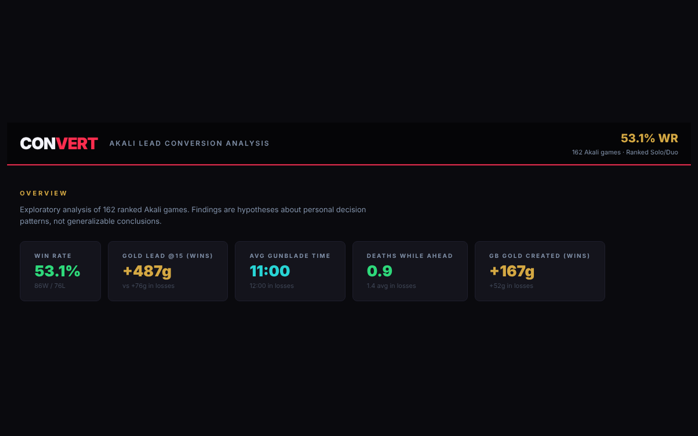

Data science · Solo
CONVERT: Why Leads Slip Away
In League of Legends, I kept losing games I was clearly winning early on. So I pulled 162 of my own matches from the game’s public data, tracked how far ahead I was at each point in the game, and built a dashboard and a simple prediction model to see when an early lead actually turns into a win, and when I throw it away.
Explore the dashboard